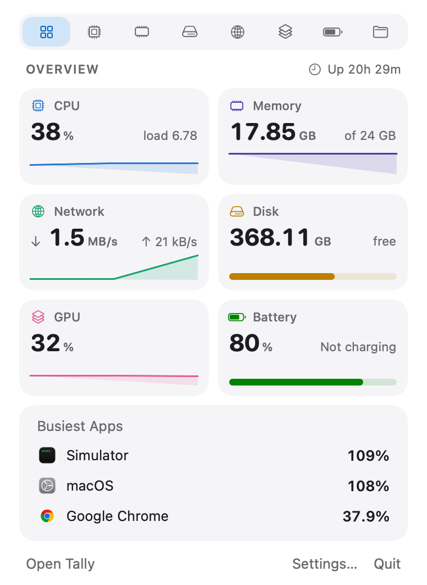

Apps, not processes
Renderers, GPU helpers, plugins and language servers count toward the app that started them. One row per app.
Tally is a free, open-source system monitor. It adds every helper process to the app it works for, so you see which apps are really using your CPU, memory, energy, disk and network.

Free, and staying that way
You shouldn't have to pay to find out what your own Mac is doing. Tally is MIT licensed and all of it is on GitHub. If it's missing something, open an issue, or build it and send a pull request.
What it does
Plus the things it never showed you: what happened while you weren't looking, which project a stray server belongs to, and how warm your Mac is running.
Renderers, GPU helpers, plugins and language servers count toward the app that started them. One row per app.
Separate views for CPU, memory, disk, network, GPU and battery, each with a live chart and a ranked list of the apps driving it.
Scroll back through the past month to see what was busy while you were away, and which apps were responsible. It all lives in a single local database.
Get a heads-up when something pins the CPU, leaks memory, or won't stop writing to disk.
Local servers and listening ports, filed under the repo they run from. Forgotten ones that haven't done anything in days get flagged, with a stop button that asks before it acts.
Choose how it shows up: a symbol, a live number, a mini chart, or a stack of readings. Click for the full picture.
On both at once? Each connection gets its own download and upload speed, plus its link speed.
See how hot the chip is running and how fast the fans spin, plus charge levels for your wireless accessories. Take manual control of the fans if you like.
Lower one noisy app without touching anything else. Sound passes straight through and is never saved.
Built to stay out of the way
Tally is a native Mac app written in Swift, with no web views and no Electron.

Privacy
A system monitor learns a lot about how you use your computer. Tally keeps what it learns in a local file you can delete any time.
No update server, no license check, no crash reporter. Tally makes no network connections of its own.
Nothing to sign up for, and no usage data collected. Not now, not later.
Every line of code is public. You don't have to take our word for any of this.
Install
Get Tally.zip and open it. Drag Tally into Applications.
macOS will say it can't check Tally for malicious software. Click Done.
Go to System Settings › Privacy & Security, scroll down, and click Open Anyway.
That warning appears because Tally isn't signed with a paid Apple developer certificate, not because anything is wrong with it. You only see it once. Prefer Terminal? This does the same thing:
xattr -dr com.apple.quarantine /Applications/Tally.app
Needs macOS 15 Sequoia or newer · Runs on Apple silicon and Intel · Sensor readings are richer on Apple silicon
Open source
Found a bug, have an idea, or want to add a feature? Tally takes issues and pull requests on GitHub.